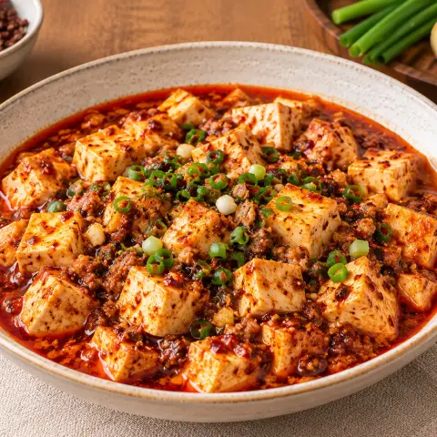

🌶️ 麻婆豆腐
ひき肉と豆板醤の辛くしびれるソースに、なめらかな豆腐。
材料
- 豆腐450 g
- 豚ひき肉225 g
- 豆板醤1.5 大さじ
- 花椒1 小さじ
- 鷹の爪6
- 唐辛子1
- 生姜30 g
- にんにく6 かけ
- 鶏ガラスープ160 ml
- 片栗粉1.5 小さじ
- ごま油0.25 小さじ
- 砂糖0.25 小さじ
- ねぎ1 本
- サラダ油6 大さじ
作り方
- 絹豆腐を2.5cm角に切る。花椒をひく（最後用に少し残す）。生姜とにんにくをみじん切りにする。
- ラー油：油の半量を弱火にかけ、乾燥唐辛子と生唐辛子を香りが出るまで熱して取り分ける。
- 残りの油を中火で熱し、生姜を1分、にんにくを1分炒める。強火にしてひき肉をほぐしながら火を通し、花椒を加えて15〜30秒炒める。
- 豆板醤、続いてスープを加えて1分煮る。片栗粉を水60mlで溶いて加え、とろみがつくまで煮る。
- ラー油を加え、豆腐をそっと入れて3〜5分煮る。ごま油、砂糖、ねぎで仕上げ、残しておいた花椒をふってご飯と一緒に。